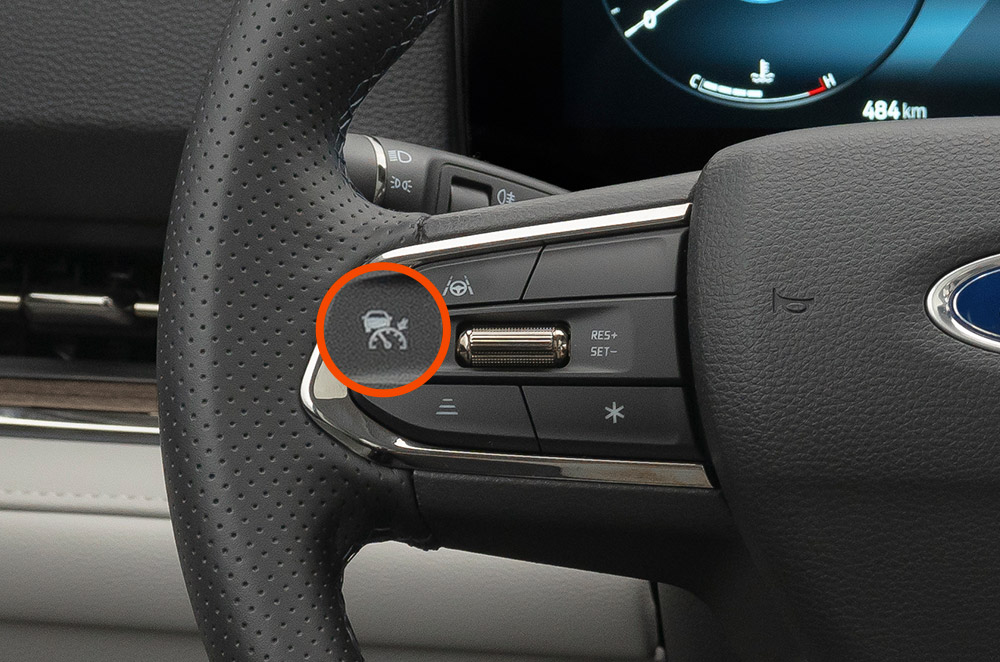
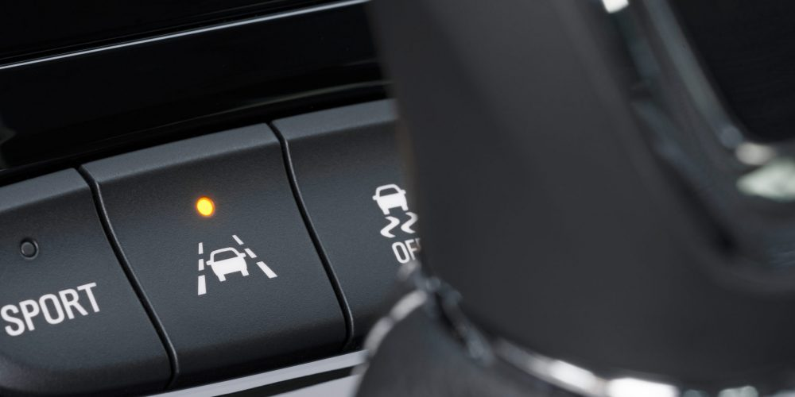
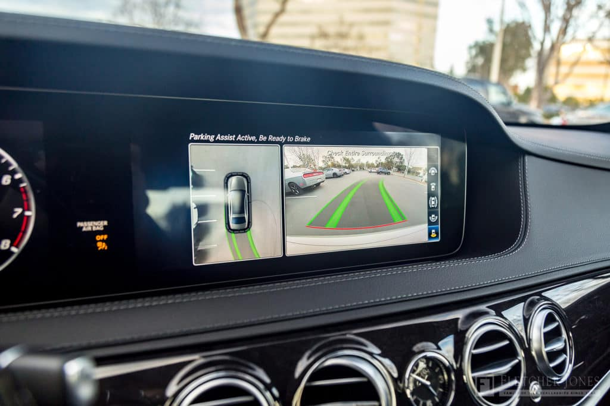
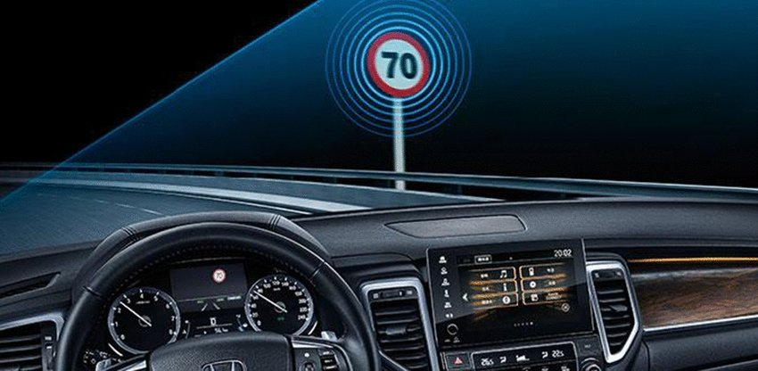

Driving assistance systems refer to technologies integrated into vehicles to aid drivers in controlling the vehicle and improving safety. These systems often use sensors, cameras, radar, and other advanced technologies to provide information about the vehicle's surroundings and to assist the driver in various tasks.
Some common examples of driving assistance systems include:
1. Adaptive Cruise Control (ACC): This system automatically adjusts the vehicle's speed to maintain a safe distance from the vehicle ahead. It can accelerate or decelerate the vehicle as needed without requiring manual input from the driver. 
2. Lane Departure Warning (LDW) and Lane Keeping Assist (LKA): LDW alerts the driver if the vehicle begins to drift out of its lane without signaling, while LKA actively steers the vehicle back into its lane to prevent unintentional lane departure. 
3. Automatic Emergency Braking (AEB):
AEB detects potential collisions with other vehicles or obstacles and automatically applies the brakes to prevent or mitigate the impact.

4. Blind Spot Monitoring (BSM):
BSM uses sensors to detect vehicles in the driver's blind spots and alerts the driver to their presence, typically through visual or audible warnings.

5. Parking Assistance: This includes features such as parking sensors, which alert the driver to obstacles when parking, and automated parking systems, which can autonomously steer the vehicle into a parking space. 
6. Traffic Sign Recognition (TSR): TSR identifies and displays traffic signs such as speed limits, stop signs, and no-entry signs on the vehicle's dashboard or heads-up display, helping the driver stay aware of relevant traffic regulations. 
7. Driver Attention Monitor:
This system monitors the driver's behavior and alerts them if signs of drowsiness or distraction are detected, encouraging them to remain attentive while driving.

8. Adaptive Headlights:
These headlights adjust their direction and intensity based on factors such as vehicle speed, steering angle, and road conditions to improve visibility and safety during nighttime driving.

9. Rearview Camera:
Is a type of driving assistance system designed to improve visibility and safety when reversing or maneuvering a vehicle in reverse. The rearview camera system typically consists of a small camera mounted on the rear of the vehicle, usually near the license plate, and a display screen located in the vehicle's dashboard or rearview mirror

10. Forward Collision Warning (FCW):
Is a driving assistance system designed to alert drivers of imminent collisions with vehicles, pedestrians, or other obstacles in the vehicle's path. The FCW system typically uses sensors, such as radar or cameras, to monitor the distance and relative speed between the driver's vehicle and objects ahead. When the system detects a potential collision risk, it provides visual, audible, or tactile warnings to alert the driver to take corrective action

Overall, driving assistance systems are designed to enhance driver safety, improve convenience, and reduce the likelihood of accidents on the road. However, they are not intended to replace the driver's responsibility for safe operation of the vehicle and should be used as aids rather than substitutes for attentive driving.
Driving assistance systems play a crucial role in enhancing road safety, improving driver convenience, and advancing the automotive industry.
Here are some key reasons highlighting their importance:
* Safety Enhancement: One of the primary objectives of driving assistance systems is to improve safety on the roads. By providing features such as automatic emergency braking, lane departure warning, and blind spot monitoring, these systems help prevent accidents and reduce the severity of collisions. This is particularly significant in reducing injuries and fatalities resulting from human error, which is a leading cause of accidents.
* Accident Prevention: Driving assistance systems can anticipate and react to potential hazards faster than human drivers. Features like adaptive cruise control and collision avoidance systems can detect dangers and take corrective actions more quickly, potentially avoiding accidents altogether. This proactive approach to safety can significantly reduce the number of collisions on the roads.
* Mitigation of Driver Errors: Human drivers are prone to errors due to factors such as fatigue, distraction, or inattention. Driving assistance systems can complement human drivers by providing additional support and compensating for these shortcomings. For example, driver attention monitoring systems can alert drivers when they show signs of drowsiness or distraction, helping to mitigate the risk of accidents caused by human error.
* Enhanced Comfort and Convenience: Many driving assistance features improve the overall driving experience by reducing the burden on the driver. Features like adaptive cruise control and traffic jam assist can alleviate the stress of driving in heavy traffic or on long journeys, allowing drivers to relax and focus more on other aspects of their journey.
* Accessibility: Driving assistance systems can make driving more accessible to individuals with disabilities or age-related impairments. Features such as automatic parking assist and adaptive controls can help individuals with limited mobility to operate vehicles safely and independently, thereby promoting greater inclusivity and mobility for all members of society.
* Technological Advancement: The development and integration of driving assistance systems represent significant advancements in automotive technology. This innovation not only improves the safety and convenience of driving but also drives progress in related fields such as artificial intelligence, sensor technology, and data analytics.
Overall, driving assistance systems play a vital role in shaping the future of transportation by making roads safer, more efficient, and more accessible to all individuals. As these technologies continue to evolve, their importance in promoting safer and more enjoyable driving experiences will only increase.